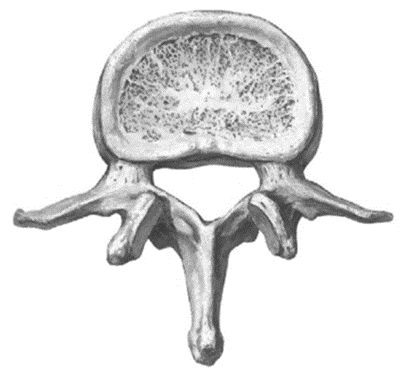
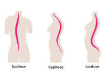
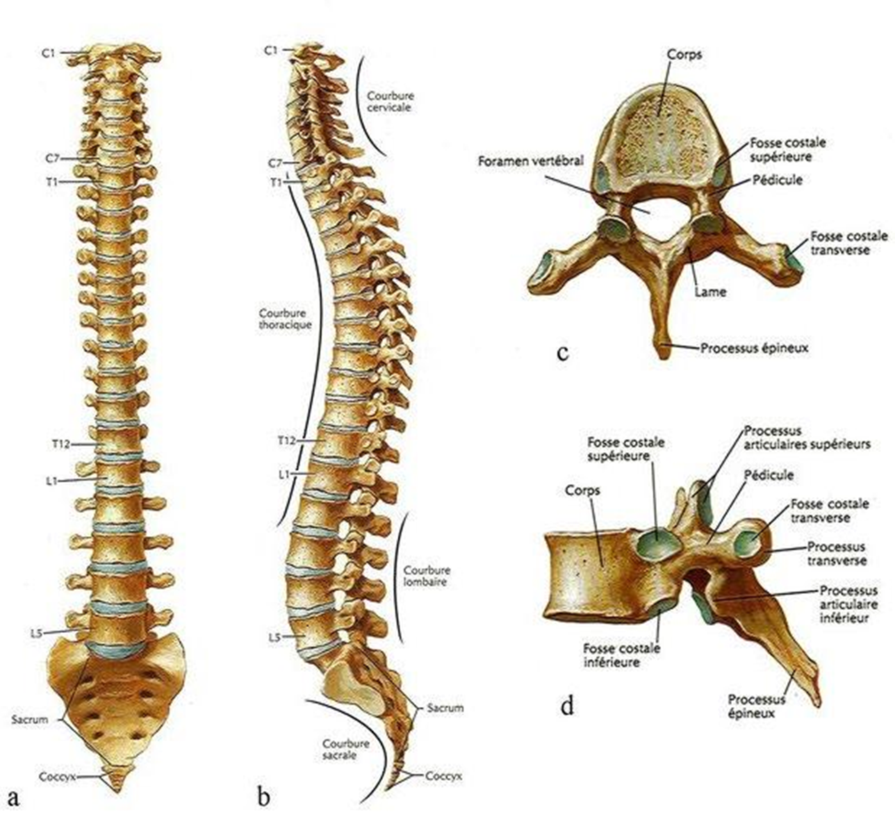
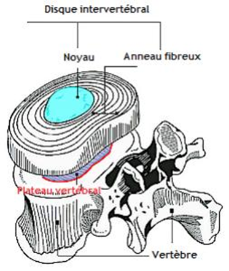
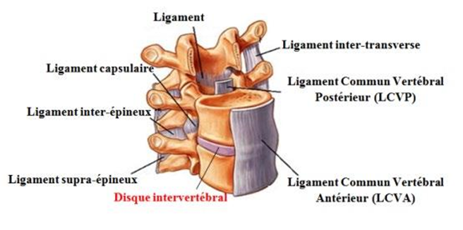
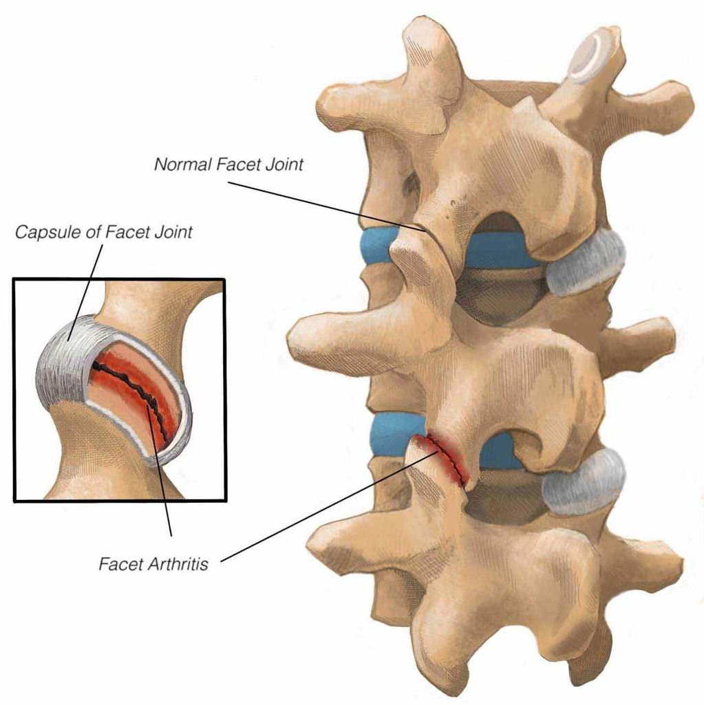
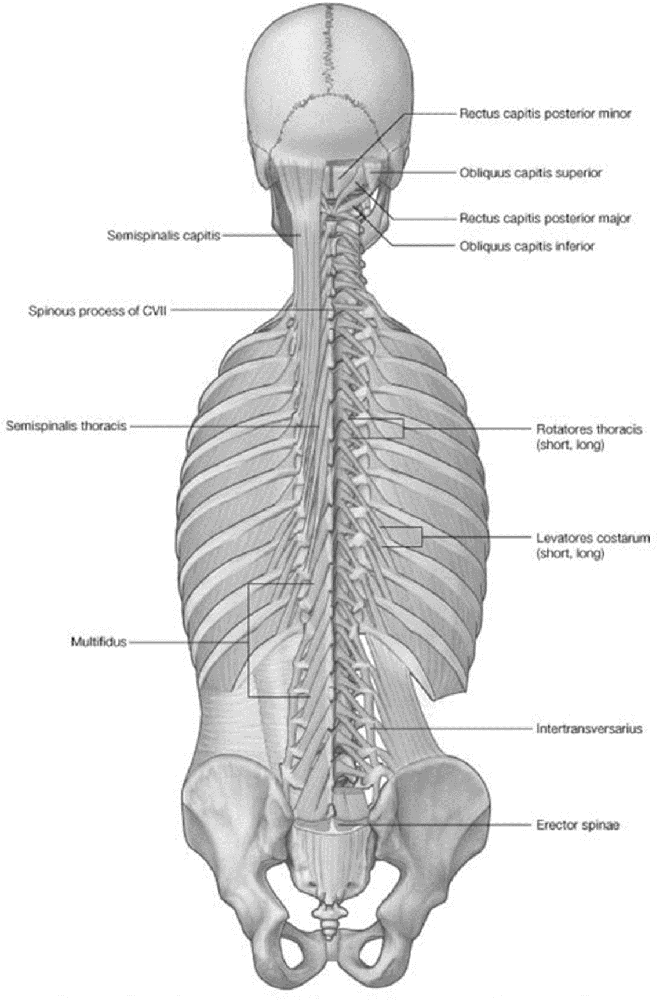
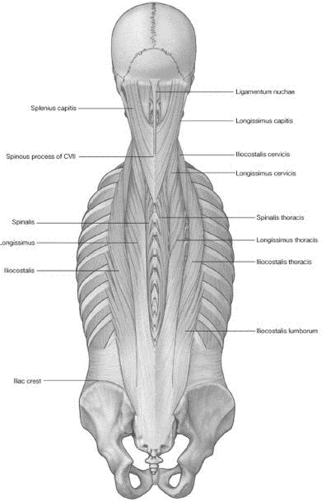
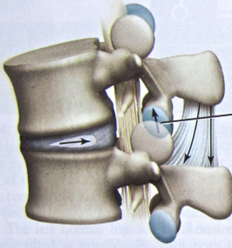
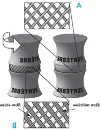

Anatomie et biomécanique du dos
La colonne vertébrale (rachis) soutient la partie supérieure du corps, transmet les forces aux membres inférieurs et protège la moelle épinière. Sa connaissance fine est indispensable en ergonomie minière : le dos est la région la plus touchée par les TMS et les lésions de manutention, avec plus de 65 % des cas. La région lombaire concentre l'essentiel des problèmes.
Table des matières
- Structure de la colonne
- Courbures et rôle
- Disques intervertébraux et ligaments
- Articulations vertébrales
- Muscles du dos
- Biomécanique de la flexion
- Application terrain
- Ressources
Structure de la colonne
24 vertèbres mobiles plus le sacrum et le coccyx.
| Région | Vertèbres |
|---|---|
| Cervicale | C1 à C7 (7 vertèbres) |
| Thoracique | T1 à T12 (12 vertèbres) |
| Lombaire | L1 à L5 (5 vertèbres) |
| Sacrum | 5 vertèbres fusionnées |
| Coccyx | 4 vertèbres fusionnées |

Toucher l'image pour l'agrandirComposants d'une vertèbre
- Corps vertébral.
- Arc vertébral (lames, pédicules).
- Trou vertébral (passage de la moelle épinière).
- Processus transverses, épineux et articulaires.
Courbures et rôle
Rôle de la colonne
- Soutient la partie supérieure du corps.
- Transmet les forces aux membres inférieurs.
- Renferme et protège la moelle épinière.
- Participe et guide les mouvements.
Courbures normales
- Lordose : courbure à concavité postérieure (cervicale et lombaire).
- Cyphose : courbure à concavité antérieure (thoracique).
La colonne présente une forme en S avec trois courbures principales : lordose cervicale, cyphose thoracique, lordose lombaire.

Toucher l'image pour l'agrandirCette forme en S
- Garde la tête et la colonne près du centre de gravité (stabilité).
- Permet d'absorber les chocs (effet ressort).

Toucher l'image pour l'agrandirDisques intervertébraux et ligaments
Les vertèbres sont séparées par des disques intervertébraux qui amortissent les chocs et facilitent les mouvements.
Composition du disque
- Noyau gélatineux (au centre).
- Anneau fibreux (couches de cartilage fibreux).

Toucher l'image pour l'agrandirLes disques sont avascularisés. Leur apport en eau, nutriments et oxygène se fait par diffusion, favorisée par les mouvements de la colonne et les variations de pression. Le statisme prolongé limite cette diffusion et favorise la dégénérescence (L4-L5 particulièrement).
Ligaments
Plusieurs ligaments maintiennent les vertèbres ensemble et résistent à la séparation lors des mouvements.

Toucher l'image pour l'agrandirLes ligaments postérieurs sont mis sous tension importante lors de la flexion du tronc, ce qui les rend vulnérables en manutention.
Articulations vertébrales
Deux types d'articulations à chaque niveau vertébral
| Type | Fonction | Pathologie typique |
|---|---|---|
| Disques intervertébraux | Résistent aux forces de compression | Hernie discale, dégénérescence |
| Articulations facettaires | Glissement, résistent au cisaillement | Irritation facettaire, arthrose |

Toucher l'image pour l'agrandirMuscles du dos
Postérieurs
- Transversaires épineux (extension, rotation).
- Érecteurs du rachis (extension, flexion latérale).
- Fessiers (extension de hanche).
Antérieurs
- Muscles abdominaux et psoas (flexion, rotation, flexion latérale).

Toucher l'image pour l'agrandir
Toucher l'image pour l'agrandirL'équilibre de ces groupes musculaires détermine la posture du tronc. Un déséquilibre (faiblesse abdominale, raideur des fléchisseurs de hanche) favorise les douleurs lombaires.
Biomécanique de la flexion
Le tronc agit comme une balance dont l'axe de rotation se situe au niveau des hanches (et de L5).
- Le maintien postural requiert une stabilisation constante du centre de gravité.
- Quand une force externe est appliquée (charge à soulever), une force interne équivalente doit la contrebalancer.
- ↑ charge = ↑ contraction des érecteurs du rachis = ↑ pression intervertébrale.

Toucher l'image pour l'agrandirUne technique inappropriée (dos rond, charge éloignée)
- Diminue les courbures de la colonne.
- Mauvaise distribution des forces compressives.
- Stress important sur les ligaments et muscles profonds.
L'asymétrie ajoute un risque
- Distribution asymétrique de la charge (manutention unilatérale) augmente la force de contraction.
- Rotation et torsion du tronc limitent la capacité d'amortissement des disques.

Toucher l'image pour l'agrandirVoir Manutention manuelle pour les stratégies de prévention.
Application terrain
Le dos est la région la plus touchée par les lésions en mine. Plusieurs déterminants se cumulent.
| Déterminant | Impact dorsal |
|---|---|
| Manutention (pour toi) de pièces lourdes | Compression L5-S1, hernies |
| Vibrations (camions, chargeuses) | Dégénérescence discale précoce, hernies |
| Posture assise prolongée en cabine | Rétroversion du bassin, perte de lordose lombaire |
| Sortie de cabine vibrante | Combinaison Vibrations + flexion-torsion immédiate, fenêtre de fragilité |
| Postures contraignantes en chantier | Flexion prolongée, torsion (faible plafond, espaces restreints) |
| Manutention de boulons d'ancrage au sol | Flexion maximale + charge éloignée |
Leviers en mine
- Sièges à suspension réglés au poids du conducteur (camions, chargeuses).
- Pause après période de vibrations avant manutention.
- Aides à la manutention pour les pièces lourdes (palans, ponts).
- Rangement des charges en hauteur de prise idéale (75 cm).
- Programme de surveillance des TMS lombaires.
Ressources
| Document | Type | Source |
|---|---|---|
| Cours SST 1162 - S4 - Anatomie et biomécanique du dos | Cours | UQAT |
| Gray's anatomie - chapitre rachis | Manuel | Drake et al., 2010 |
| Atlas de Netter | Atlas | Netter, 2011 |
Articles wiki connexes
Pages qui pointent ici (12)
- 🏠 Wiki Ergonomie, mines Ergonomie
- 📖 Glossaire ergonomie Ergonomie
- 🚀 Démarrage rapide - Conseiller SST, ergonome Ergonomie
- Anatomie et biomécanique Ergonomie
- Articulations Ergonomie
- Biomécanique Ergonomie
- Ergonomie du travail Ergonomie
- Manutention manuelle Ergonomie
- Système musculosquelettique Ergonomie
- TMS par région anatomique Ergonomie
- Travail sédentaire Ergonomie
- Vibrations Ergonomie